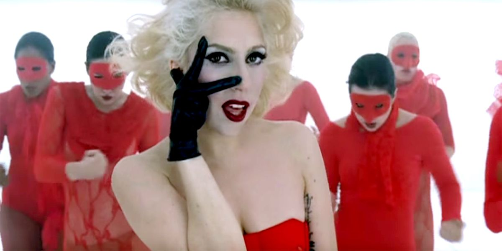
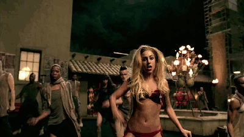

-
Catholicism in Performance
Lady Gaga's music videos and live performances are visually excessive, eye-catching, and often overtly religious in symbolism.
-
Controversy
This use of religious symbols in secular and occcasionally sexual contexts has generated significant public and religious controversy.
-
Personal Faith & Religious Reactions
A self-identified Catholic, Lady Gaga is open about her faith beyond her public persona.
Catholicism in Performance

Portrayals of Jesus
In her music video for "Judas", Lady Gaga portrays not only Judas, but also Jesus as members
of a rowdy biker gang vying for her heart. This portrayal of Jesus with all the accompanying
religious iconography led to outrage amongst some Catholic viewers [add source].
Seen here, she portrays Jesus with a stylized, golden crown of thorns.
In her 2011 interview with The Guardian, Gaga states that "What matters is there was a time – I'm going to cry – when nobody knew who we were, and all we had was each other and we only created for each other, because it made us happy, and now that the whole world is watching, we're still doing the same thing. So, no, I didn't pop out of nowhere and become a pop singer. It's been a very real and arduous journey through Judas all the way to Jesus." This dichotomy of Judas and Jesus is never as clear as in the lyrics of "Judas" as she sings "Jesus is my virtue / And Judas is the demon I cling to, I cling to"
This is not her only song featuring references to Jesus but due to the attention surrounding the video, it was certainly the most debated. Other songs like "Bloody Mary" use the crucifixion as inspiration for lyrics. Lyrics such as "When Punk-tius comes to kill the King upon his throne" allude to Pontius Pilate and the chorus repeats "I won't cry for you / I won't crucify the things you do / I won't cry for you / See, when you're gone, I'll still be Bloody Mary" in reference to both the crucifixion and Mary Magdelane.
In her 2011 interview with The Guardian, Gaga states that "What matters is there was a time – I'm going to cry – when nobody knew who we were, and all we had was each other and we only created for each other, because it made us happy, and now that the whole world is watching, we're still doing the same thing. So, no, I didn't pop out of nowhere and become a pop singer. It's been a very real and arduous journey through Judas all the way to Jesus." This dichotomy of Judas and Jesus is never as clear as in the lyrics of "Judas" as she sings "Jesus is my virtue / And Judas is the demon I cling to, I cling to"
This is not her only song featuring references to Jesus but due to the attention surrounding the video, it was certainly the most debated. Other songs like "Bloody Mary" use the crucifixion as inspiration for lyrics. Lyrics such as "When Punk-tius comes to kill the King upon his throne" allude to Pontius Pilate and the chorus repeats "I won't cry for you / I won't crucify the things you do / I won't cry for you / See, when you're gone, I'll still be Bloody Mary" in reference to both the crucifixion and Mary Magdelane.

Fashion & Religion
[This will eventually discuss some of Lady Gaga's fashion choices and similarities with Roman Catholic aesthetics]
The song compares Jesus to classic fashion with lyrics like "Jesus is the new black" and "Amen, on the runway" [More Analysis to come]
The song compares Jesus to classic fashion with lyrics like "Jesus is the new black" and "Amen, on the runway" [More Analysis to come]

Music Videos

Judas Music Video
[Analysis to come]

Religious Symbols
This section will focus more on her use of religious materials in videos, such as the golden cross pictured here.
[More Analysis to Come]

Catholicism & Sexuality
[Analysis to come]
The Rosary & Public Backlash
[Analysis to come regarding "Alejandro" music video and intersection of religious symbols and sexuality]

Performance & Religion
×

Image Text
Personal Faith & Religious Reactions
The Institution of Relgion
"Don't say I hate institutionalised religion – rather than saying I hate those things, which I
do not, what I'm saying is that perhaps there is a way of opening more doors, rather than
closing so many." -Lady Gaga Quoted in 2011 The Guardian interview
The Clergy
Personal Relationship with Prayer
This section will focus on Lady Gaga's personal relationship with her religion as expressed in interviews and social media.

Dalai Lama
[Analysis to come]
Catholicism & Sexuality
[Analysis to come]

Fan Culture around Lady Gaga
"No, but it does put me in an interesting position as an artist whose fan base is commercial and
widening. If you were to ask me what I want to do, I don't want to be a celebrity, I want to
make a difference. I never wanted to look pretty on stage and sing about something we've all
heard about before. I'd much rather write a song called Judas and talk about betrayal and
forgiveness and feeling misunderstood, and talk to the fans and figure out what it is society
needs. If I can be a leader, I will." -Lady Gaga quoted in 2011 Guardian interview
[More Analysis to come]